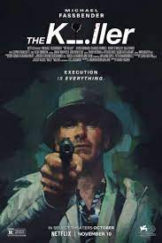

After a near disaster, an assassin fights against his employers and himself in an international manhunt that he insists is nothing personal.
The complex love of Leonard and Felicia, since they met in 1946 and through two engagements, a 25-year marriage and three children.
It is inspired by true events revolves around the story of Manoj Kumar Sharma, a village boy from an impoverished background who fails in his 12th standard exams. Yet with his passion, he becomes an IPS officer.
Ex-special forces operative Mason Pettits (John Cena) is stuck in a dead-end desk job when he reluctantly takes on a freelance gig to provide private security for washed-up journalist Claire Wellington (Alison Brie) as she interviews the ruthless-but impeccably dressed-dictator, Juan Venegas (Juan Pablo Raba).
When single father Victor Fielding's daughter, Angela, and her friend Katherine, show signs of demonic possession, it unleashes a chain of events that forces him to confront the nature of evil. Terrified and desperate, he seeks out Chris MacNeil, the only person alive who's witnessed anything like it before.
Willie Gary, a lawyer, is the son of a poor immigrant worker known as "The Giant Killer". He takes on the case of Jeremiah O'Keefe, owner of a local funeral home chain, who is defrauded by a powerful conglomerate.
Other films that I would have recommended myself will arrive soon !